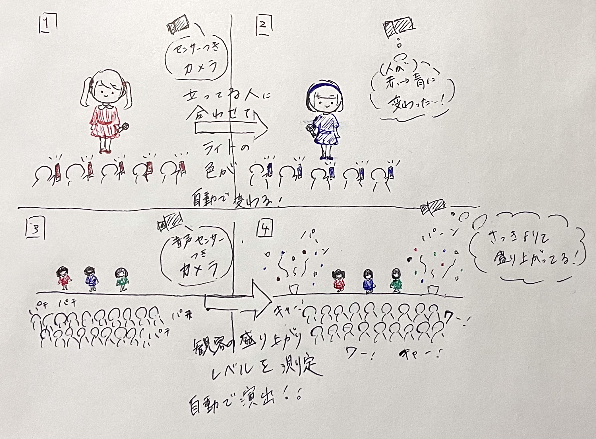
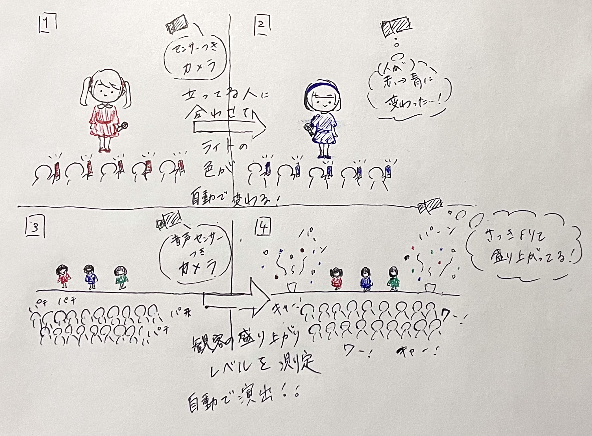

1.IoTを活用した新たなモノやサービス
グループで出た例は以下の通り。

日々の手間を減らしてくれる必要度の高いモノから、あったら便利なモノまで様々あがった。
そして、モノが同じでも機能が少し違ったり、機能が似ていても違うモノだったりしておもしろかった。
しかし、サービスに比べモノの案が多く、IoTを活用したサービスは思いつきにくいように感じられた。
日々の手間を減らしてくれる必要度の高いモノから、あったら便利なモノまで様々あがった。
そして、モノが同じでも機能が少し違ったり、機能が似ていても違うモノだったりしておもしろかった。
しかし、サービスに比べモノの案が多く、IoTを活用したサービスは思いつきにくいように感じられた。
2.IoTを活用したモノのアイディア
1のグループワークで出た「スタジアム内にセンサーを置き、観客の動員数や場面、イニングごとの
盛り上がりを数値化したデータを取る」という案と、光を操るIoTから着想を得て以下の案を考えた。

アイドルなどのライブでよく使われるペンライトを自動制御するシステムだ。
最近では、会場のペンライトを制御するシステムがよくみられるが、それも事前にプログラミングしたり、
裏でのリアルタイムの操作が必要だろう。しかし、センサーのついたカメラを設置して自動で感知し、
自動で一斉操作・制御が可能なシステムがあればその必要もなくなる。
さらに、観客の歓声や動きをセンサーで感知して盛り上がりを数値化できれば、ペンライトの他に照明や
銀テープなどの演出も完全自動化が可能になる。その場の雰囲気に合わせることができるため、
より盛り上がることも期待できる上、突然の状況にも対応可能だ。
また、AIと組み合わせることで判断材料も増え、演出の幅も広がるかもしれない。
盛り上がりを数値化したデータを取る」という案と、光を操るIoTから着想を得て以下の案を考えた。

アイドルなどのライブでよく使われるペンライトを自動制御するシステムだ。
最近では、会場のペンライトを制御するシステムがよくみられるが、それも事前にプログラミングしたり、
裏でのリアルタイムの操作が必要だろう。しかし、センサーのついたカメラを設置して自動で感知し、
自動で一斉操作・制御が可能なシステムがあればその必要もなくなる。
さらに、観客の歓声や動きをセンサーで感知して盛り上がりを数値化できれば、ペンライトの他に照明や
銀テープなどの演出も完全自動化が可能になる。その場の雰囲気に合わせることができるため、
より盛り上がることも期待できる上、突然の状況にも対応可能だ。
また、AIと組み合わせることで判断材料も増え、演出の幅も広がるかもしれない。